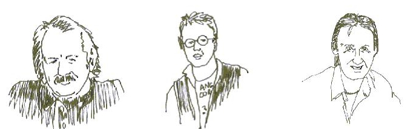
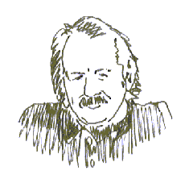
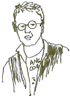
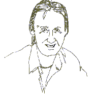

Frank Boyle, The Swan, The Vicar

Artists in life and in paint
The genesis of an artistic movement is often easily identified in retrospect yet cloudy in prospect.
When Rene Magritte walked up to Henry Moore in that Moulin Rouge burlesque and asked to borrow his pipe, not even the most prescient of Parisian prima donnas could have heard the overture to the Dada movement that was playing behind the curtains.
Thus history will muse on the events of this week in the Walnut Cafe.
The square slice boys have known each other for upwards of 20 years.
Yet instead of forming an artistic movement, they have wasted their time on absurdly loud music and home improvements.
Only now, when they are perhaps hearing the first hint of the call to the pavilion, have they allowed the muse to tweak their luxuriant mustachios and begun to consider their place in the tapestry.
The dissolute pasts of the boys should not be plumbed, but just for the record I proffer these pen-pictures
Frank Boyle

a.k.a. EL Generalissimo Franco
This ascetic Keith Richards lookalike is elegantly wasted to the point where light itself seems to shine through his all too fragile flesh.
One can never be sure the former street fighter has both feet planted in this world.
One foot might be planted on the verdant sod of Skibbereen or, more likely, the high arid ridges of the Atlas Mountains to whence he repairs to fast and meditate.
Light shines through his paintings which some have described as net curtains only partially screening the laws of physics.
In Roll and Pie for example, the crust of the pie is so luminescent that one feels the very quantum vibrations of the pastry are on show.
The Swan

Craig Smillie a.k.a. The Swan
Fitness fanatic and disciplinarian.
All his adult years, the Swan has heard the music that rides the winds from the Well at the World's End to his squalid South Side tenement. In his case it came from some dodgy Springsteen bootlegs ululating with wow and flutter and more hiss than Jim Davidson would get at Pride.
Swan's best work combines his musical and artistic bents.
Big Caper reclining with mandolin for example, has the folk world agog with intrigue as to where and when the sitting took place. Perhaps in a stovies fuelled post-gig binge at Tarbert folk festival.
The Vicar

David McLachalan a.k.a. The Vicar
Despite averring that all art is apolitical, this vegetarian Feng Shui aficionado has recently been active in disparate radical movements such as the Countryside Alliance and the William Wallace Society for the Refurbishment of Elderslie (WWSRE).
A slavish devotion to his craft led him to enroll year after year in life drawing classes, despite the teacher's assurance that he had no more to learn.
His calling as a clergyman has provided him with 6 days off work a week. Most artists would wallow in this luxury and produce canvas after canvas. The Vicar, however has used the time to become an expert on the Spanish, Portugese, Dutch and German football leagues via the 12 foot aerial in his manse garden. This is not entirely art's loss. The Pointillist
Mark Yardley hurdles Roberto Carlos' despairing tackle before rounding Iker Casillas would doubtless not be hanging in this expo without such research.